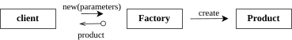
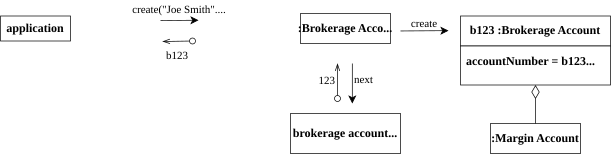
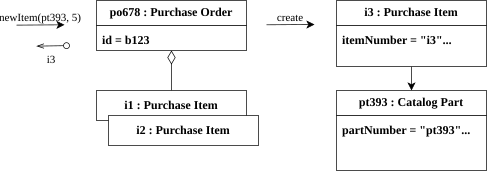
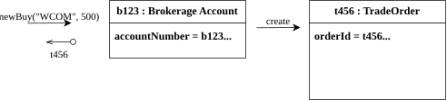
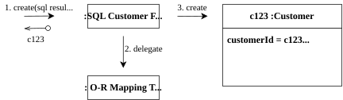
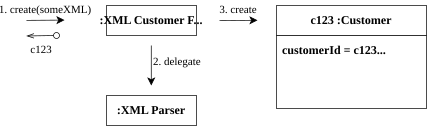

Factory
Factory 是 Domain-Driven Design 中負責建立複雜物件或 Aggregate 的模式。它將「如何建立物件」的邏輯集中管理，讓 client 不需要知道建立的細節。

What
定義
Factory 是一種將物件建立邏輯封裝起來的機制。當一個物件或 Aggregate 的建立過程很複雜，或建立過程需要揭露許多內部細節時，Factory 將這些複雜性隱藏起來，提供一個清楚的建立介面。
Factory 的實作手段 (GoF Design Patterns)：
- Factory Method：在類別中定義建立物件的方法，子類別可以決定實際建立的型別。
- Abstract Factory：提供一個建立相關物件家族的介面，無需指定具體類別。
- Builder：逐步建立複雜物件，適合有很多可選設定的情境。
Why
當物件或 Aggregate 的建立過程複雜時，不加以封裝會產生問題：
- 洩漏內部細節：client 被迫了解物件的內部結構才能完成建立，破壞了封裝性。
- Invariant 不易保護：建立邏輯分散在各處，容易忘記設定某個必要狀態，導致物件一開始就違反 invariant。
- 建立與使用耦合：client 同時負責知道「如何建立」與「如何使用」，職責不清。
Factory 將建立責任集中，確保每個新建立的物件都滿足其 invariant，並從一開始就處於有效狀態。
何時只需要 Constructor (不需 Factory)
並非所有的物件都需要 Factory。書中強調，如果符合以下情況，直接使用 Constructor 即可，過度使用 Factory 反而會增加不必要的複雜度：
- 類別本身就是具體型別：沒有複雜的多型 (Polymorphism) 或繼承階層。
- Client 關心實作細節：例如要選擇某個具體的「策略 (Strategy)」，Client 本來就需要知道特定實作。
- Client 已經擁有所有構造所需屬性：不需要透過複雜的內部狀態計算或其他物件來提取資訊。
- 建構過程很簡單：沒有複雜的組裝邏輯，也就是
new一下就好了。 - 能夠輕易滿足 Invariant：只要把參數傳入 Constructor，物件立刻就是完全合法且立即可用的狀態。
Rules
| 規則 | 說明 |
|---|---|
| Factory 確保 Invariant | 建立出來的物件或 Aggregate 必須處於一致且有效的狀態。 |
| 整個 Aggregate 由 Factory 建立 | Factory 建立整個 Aggregate，並回傳 Aggregate Root。 |
| Aggregate Root 可作為 Factory Method 的宿主 | 在既有的 Aggregate 中新增元素，可以在 Root 上加入 Factory Method。 |
| Factory Method 產生的物件不一定屬於此 Aggregate | Factory Method 可以用來建立另一個 Aggregate 的物件，只要建立邏輯與此 Aggregate 相關即可。 |
| 重建 (Reconstitution) 與新建不同 | 從資料庫重建物件時，不一定需要驗證所有 Invariant（資料已存在，應該是合法的），但要確保物件狀態完整還原。 |
Examples
分配全域 Identity 與封裝複雜建構邏輯

針對 Entity 或 Aggregate Root 的建立，有時會牽涉到無法單純靠 Constructor 解決的外部依賴（例如需要向外部機制取得流水號）。Factory 的任務就是將這些前置準備與外部資源的互動封裝起來：
- 取得與分配全域唯一的 Identity (ID)：如圖中，Factory 向
brokerage account number sequence(通常是資料庫 sequence 或其他外部服務) 要求一個唯一的流水號123，然後才以此流水號建立物件。這可以避免將產生 ID 的基礎設施邏輯混入核心的 Domain Object 中。 - 根據參數處理 Aggregate 的內部組裝：如圖中接收到
MARGIN_APPROVED參數後，Factory 除了建立 Aggregate Root（:Brokerage Account）之外，還一併負責把其內部的元件（:Margin Account）建立起來並組裝好。Factory 將這段「確保整個 Aggregate 從一開始就完整可用」的複雜機制給封裝了。
public class BrokerageAccountFactory {
private final AccountNumberSequence accountSequence;
// Factory 隱藏了向系統取得 ID 以及組裝 Aggregate 內部元件的複雜度
public BrokerageAccount create(String customerName, AuthorizationType authType) {
// 1. Factory 負責與外部基礎設施互動，取得流水號 (如 123)
long seq = accountSequence.next();
// 2. 將流水號轉換/組合成系統實際的 Identity 格式 (如 b123)
AccountNumber number = new AccountNumber("b" + seq);
// 3. 建立 Aggregate Root
BrokerageAccount account = new BrokerageAccount(number, customerName);
// 4. 若符合特定條件 (如 MARGIN_APPROVED)，負責建立並組裝 Aggregate 內部的其他元件
if (authType == AuthorizationType.MARGIN_APPROVED) {
MarginAccount margin = new MarginAccount();
account.enableMargin(margin); // 將 MarginAccount 組裝進 Root
}
return account;
}
}
在既有的 Aggregate 中新增元素

通常在既有的 Aggregate 中新增元素時，可以把 Aggregate Root 當作 Factory。透過在 Root 上提供 Factory Method，能有效封裝內部物件（例如 Purchase Item）的建立細節，並確保 Aggregate 內部的 Invariant 不被破壞。
// Aggregate Root
public class PurchaseOrder {
private List<PurchaseItem> items;
private Money approvedLimit;
// Factory Method: 建立並封裝內部元素的邏輯
public PurchaseItem newItem(CatalogPart part, int quantity) {
Money price = part.getPrice();
Money itemTotal = price.times(quantity);
// Factory Method 在建立內部物件前，負責驗證 Invariant
if (this.total().add(itemTotal).isGreaterThan(approvedLimit)) {
throw new ApprovedLimitExceededException();
}
// 隱藏 PurchaseItem 的建構細節
PurchaseItem newItem = new PurchaseItem(part.getPartNumber(), price, quantity);
this.items.add(newItem);
return newItem; // 根據範例，回傳新建的 PurchaseItem (i3) 供 Client 暫時操作或取值
}
private Money total() {
return items.stream()
.map(item -> item.getPrice().times(item.getQuantity()))
.reduce(Money.ZERO, Money::add);
}
}
建立不屬於此 Aggregate 的物件

雖然同樣是在 Aggregate Root 上加上 Factory Method，但所建立出來的元素 不一定 要屬於同一個 Aggregate。
public class BrokerageAccount {
private final AccountNumber accountNumber;
private final String customerName;
// Factory Method：建立 BuyOrder 的 TradeOrder，但 TradeOrder 並不屬於 BrokerageAccount 這個 Aggregate
public TradeOrder newBuy(Security security, int numberOfShares) {
// ... (可在這裡檢查業務規則，例如帳戶是否有下單權限) ...
// TradeOrder 建立需要引用 BrokerageAccount 的標識符 (accountNumber)
TradeOrder order = new TradeOrder(
TradeOrderId.generate(),
this.accountNumber, // 對應圖片的 brokerageAccountId
security,
numberOfShares,
OrderType.BuyOrder
);
return order; // 回傳新建的 TradeOrder (t456)
}
}
為什麼讓 BrokerageAccount 產生 TradeOrder？
雖然 TradeOrder 不屬於 BrokerageAccount 的 Aggregate，但讓它來負責建立 TradeOrder 是自然的，因為：
TradeOrder建立需要BrokerageAccount的資訊（如帳戶 ID）。BrokerageAccount控制交易是否允許（業務邏輯聚集在有知識的地方）。
重建 Aggregate（Reconstitution）
當物件已經被持久化到儲存媒體（如資料庫或 XML），我們將它讀取並還原回記憶體中 Domain Object 的過程稱為重建（Reconstitution）。
透過 Factory 來處理重建過程，我們能將「解析外部資料格式」（如 SQL 資料列或 DOM 節點）的麻煩事與物件產生的邏輯封裝起來。這樣一來，保證了 Domain Object 的純粹，不受底層技術細節污染。

▲ 從關聯式資料庫的 SQL Result Set 中提取資料並交由 Factory 重建物件

▲ 從 XML 文件解析內容並交由 Factory 重建物件
新建 (Creation) 與重建 (Reconstitution) 對 Invariant 的處理差異
在重建過程中有一條很重要的守則：重建時，通常不需要重新驗證 Invariant。
新建遇到錯誤時，我們會丟出例外拒絕建立。但「重建」的目的在於「真實還原被持久化的資料」。如果一筆資料存入後，業務規則發生了變更（例如總額上限被調降），我們在還原舊訂單時如果依舊嚴厲地驗證，可能會導致「歷史資料再也讀不出來」的窘境。因此，重建的職責就是放寬限制，如實還原物件原貌。
public class PurchaseOrderFactory {
// 1. 用於新建（Creation）：必須嚴格驗證所有 Invariant、並產生初始狀態
public PurchaseOrder create(CustomerId customerId, Money approvedLimit) {
// ... (可能有各種業務規則檢查)
return new PurchaseOrder(
PurchaseOrderId.generate(), customerId, approvedLimit, Collections.emptyList()
);
}
// 2. 用於重建（Reconstitution）：從外部資料源負責還原狀態
// 這裡的方法允許外部放入完整的持久化資料，且會跳過 Invariant 的拒絕性檢查
public PurchaseOrder reconstitute(
PurchaseOrderId id,
CustomerId customerId,
Money approvedLimit,
List<LineItem> lineItems) {
return new PurchaseOrder(id, customerId, approvedLimit, lineItems);
}
}
Factory vs. Repository
| Factory | Repository | |
|---|---|---|
| 職責 | 建立（新建或重建）物件 | 保存、查詢、刪除物件 |
| 物件狀態 | 新建的物件，尚未持久化 | 已持久化的物件 |
| 身份 (Identity) | 通常在建立時指派新 ID | 使用已存在的 ID 查詢 |
Repository 可以委託 Factory 來重建從資料庫取出的物件：
public class JpaPurchaseOrderRepository implements PurchaseOrderRepository {
private final PurchaseOrderFactory factory;
@Override
public Optional<PurchaseOrder> findById(PurchaseOrderId id) {
return jpa.findById(id.value())
.map(record -> factory.reconstitute(
new PurchaseOrderId(record.getId()),
new CustomerId(record.getCustomerId()),
Money.of(record.getApprovedLimit()),
toLineItems(record.getLineItems())
));
}
}
Client 從 Factory 建立物件後，需要知道應透過 Repository 保存物件：
// client 的使用流程
PurchaseOrder order = purchaseOrderFactory.create(customerId, approvedLimit);
// ... 對 order 進行操作 ...
purchaseOrderRepository.save(order); // 透過 Repository 持久化